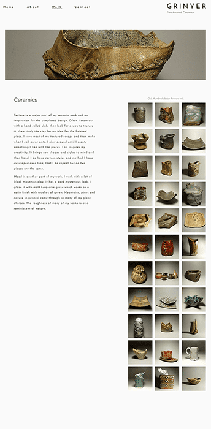

A user created database of connections between similar sounding songs. Each connection has at least one type specifying the nature of the connection – for instance a bassline for songs with similar sounding basslines. Connections can be rated, browsed and commented on by the community.
Ways of Seeing (1971) by John Berger is certainly one of the most influential books on art ever written, but it is not necessarily the most pleasing to the eye. Budget constraints meant that all 155 images including those that make up the "pictoral essays" were printed in black and white.
I first read the book in college and turned, like I'm sure did many others, to one of the widely available roughly scanned PDF files. This HTML version of the book is my attempt to provide a more readable alternative.
Mary Grinyer is an Artist living in Riverside, California. This portfolio site highlights her work in ceramics as well as other sculpted pieces.